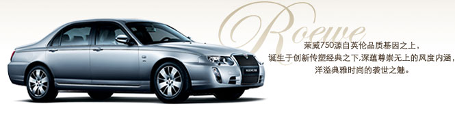

|  |
|
|
| 饱满圆润的英式前脸，典雅修长的雪茄车型（Cigar Shape），优雅舒展的线条和现代精致的尾部完美一体，配合考究内饰营造的华贵尊荣空间，让荣威（Roewe）750车身内外无不弥散着纯正浓厚的英伦新经典主义气息，于流畅时尚之中呈现鲜明的大不列颠审美风尚，气派非凡，个性十足。 |
|
|
| 强劲而不失沉稳，扎实而又充满灵动，优异的动力操控，充分演绎了源自欧洲高档车技术的品位格调和根据中国实际创新而就的节能环保理念，中西合璧，既体现了荣威（Roewe）750作为绅士温文尔雅的一面，又恰当的彰显了其勇士的激情勇气，自信而从容，用出色成就你的尊贵本色。 |
| 六位一体超越主流的主动安全系统和充分演绎上汽S5-Solution整车设计理念的被动安全系统，加上超强的整体车身结构，共同成就荣威（Roewe）750巨细无遗的安全防范和稳定灵敏的驾乘体验。无论软件还是硬件，Roewe荣威都犹如一位忠诚体贴的绅士，给您始终如一的安全无虞。 |